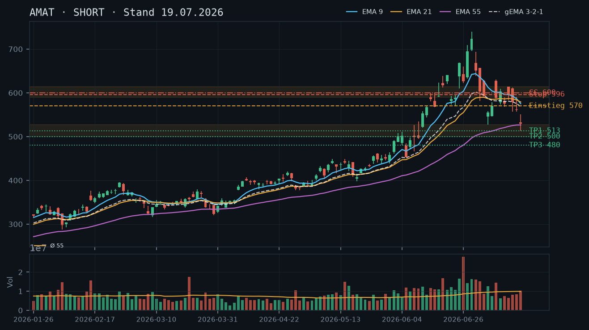
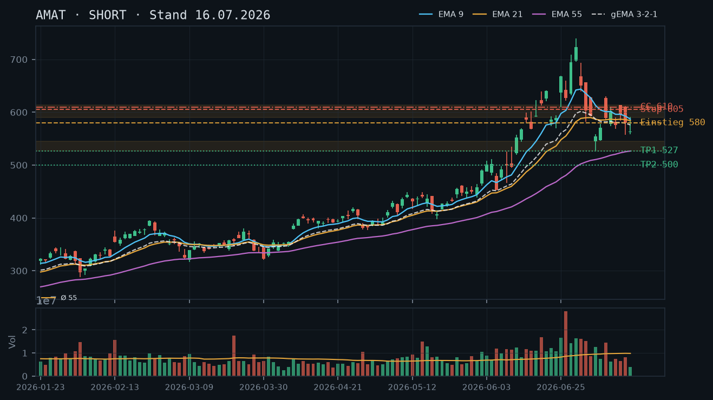
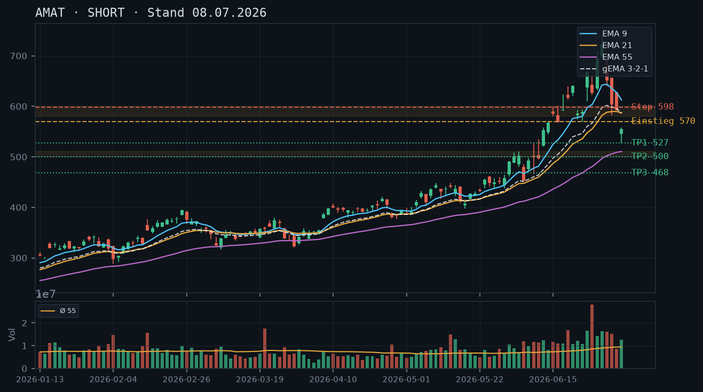

AMAT
Analyse-Historie · neueste zuerstAMAT konsolidiert nach dem Abwärtsdruck der Vorwochen in einer engen Range um 525–565 – der EMA-Verbund bleibt bärisch, ein technischer Bounce bietet weiterhin Short-Einstiegs- und Naked-Call-Opportunitäten im Widerstandsbereich.

1 · Trendstruktur
AMAT hat nach dem Blow-off-Top bei 739,67 (30.06.) eine klare Abwärtsstruktur etabliert: Das erste Swing-Low lag bei 513,22 (17.07.), seither bildet sich eine Konsolidierungsphase zwischen 513–525 (Support) und 563–575 (Widerstand). Die letzten drei Kerzen (17.07., 20.07., 21.07., 22.07.) zeigen steigende Hochs und Tiefs – ein potenzieller Mini-Bounce – jedoch ohne nachhaltigen Volumen-Anstieg und weiterhin unterhalb des gesamten EMA-Verbunds. Der übergeordnete Downtrend (Hochs: 739 → 629 → 614 → 572) ist intakt. Weder wurde ein höheres Hoch über 591 (16.07.) noch ein Bruch der Abwärtstrendstruktur vollzogen.
2 · Candlestick-Formationen
Die letzten vier Kerzen zeigen einen verhaltenen Bounce ohne Überzeugung: 17.07. eine lange Abwärtskerze mit unterem Docht (Erholung vom Intraday-Low 513,22), 20.07. eine Inside-Candle mit engem Spread bei unterdurchschnittlichem Volumen (rel. Vol. 0,66), 21.07. eine moderat bullische Kerze (564,55 Close, rel. Vol. 0,77), 22.07. eine bearishe Umkehr – Doji/Shooting-Star-ähnlich mit Oberschatten bis 563,34 und Rückgang auf 553,92, bei sehr niedrigem Volumen (rel. Vol. 0,50 – nur 50% des 55er-Schnitts). Das schwache Volumen des Bounce und die Rejection an der Widerstandszone 563–575 schwächen die Kaufseite erheblich.
3 · EMA-Lage (9 / 21 / 55)
EMA-Verbund bleibt bärisch geordnet: EMA9 (562,82) < EMA21 (571,50) < gema_321 (560,05) – der Kurs (553,92 Close, IBKR 555,54) liegt unterhalb aller drei EMAs und damit unterhalb des gewichteten Verbunds. Die EMAs konvergieren zunehmend (Spread EMA9/EMA21 nur noch ~8,7 Punkte), was eine Kompressionsphase anzeigt. EMA55 (528,86) steigt noch leicht an und bildet eine dynamische Untergrenze. Der gema_321 bei 560,05 fungiert als kurzfristige Decke; der Kurs hat diese Linie seit dem 06.07. nicht mehr nachhaltig überwunden. Vorherige Analysen (Short-Bias, EMA-Decke bei 575–585) werden durch aktuelle Daten bestätigt – die EMA-Struktur hat sich weiter nach unten verdichtet.
4 · Trade-Setup
| Richtung | Short |
| Einstieg | 563,00–572,00 (Limit-Short bei Bear-Rally in EMA9/gema_321-Zone) |
| Stop | 592,00 (über Swing-High 16.07. bei 591,09 und EMA21-Cluster) |
| Ziel | 525,00 (Konsolidierungs-Support) / 513,00 (Intraday-Low 17.07.) |
| CRV | 2.0 : 1 (bei Einstieg 567, Stop 592, Ziel 517) |
5 · Stillhalter (max. 12 Tage)
Kein Aktienbestand vorhanden (IBKR: 0 Aktien, keine offenen Optionen). Ein Covered Call scheidet aus. Das einzig saubere Stillhalter-Instrument im laufenden Abwärtstrend ist ein Naked Call oberhalb des EMA-Verbund-Widerstands. Ein CSP bleibt weiterhin unattraktiv: Die 513–525er-Zone ist erst einmal getestet worden (17.07.), damit noch kein bestätigter Support – ein unbestätigter Bereich ohne ausreichende Puffertiefe für ein risikogerechtes CSP.
| Geschäft | Covered Call |
| Strike | 595.0 |
| Puffer | 7.1 % |
| Zone | Widerstandscluster 575–591 (EMA21-Decke 571,50, gema_321 560,05, Swing-Highs 14.07. bei 614, 15.07. bei 611,72, Rejection 16.07. bei 591,09) |
| Verfall bis | 2026-08-01 (9 Tage) |
| Begründung | Der Strike 595 liegt oberhalb des mehrfach abgeprallten Widerstandsbereichs 575–591 (Rejection 16.07. bei 591,09, EMA21 bei 571,50, gema_321 bei 560,05). Vom IBKR-Kurs 555,54 besteht ein Puffer von ca. 7,1% zum Strike. Der Kurs müsste den gesamten EMA-Verbund (EMA9 562, EMA21 571) UND die Widerstandszone 575–591 überwinden – beides gegen den intakten Abwärtstrend. Das Naked-Call-Risiko ist theoretisch unbegrenzt; ein vorab definierter Schließungs-Trigger bei Kurs über 580 (Bruch der EMA21-Zone auf Tagesbasis) ist zwingend. Andienungs-Check: Bei 595 liegt AMAT über dem gesamten EMA-Verbund und hätte den Abwärtstrend gebrochen – sofortige Gegenkontrolle und Positionsschließung erforderlich. In der Optionskette zu prüfen: Prämie (IV nach dem Sell-off erhöht, sollte attraktiv sein), Delta (Ziel ≤ 0.20), Bid-Ask-Spread (Liquidität AMAT üblicherweise gut), Open Interest am Strike 595. |
Ausführliche Analyse vom 23.07.2026 anzeigen
AMAT – Detailanalyse 23.07.2026
1. Trendstruktur & historischer Abgleich
Die übergeordnete Trendstruktur wurde in den drei Voranalysen (08.07., 16.07., 19.07.) konsistent als Short eingestuft – diese Einschätzung wird durch die aktuellen Daten vollumfänglich bestätigt. Das Blow-off-Top bei 739,67 (30.06.) markiert das unangefochtene Allzeit- bzw. Swing-Hoch dieser Bewegung. Die anschließende Abwärtsstruktur zeigt klassisch sinkende Hochs: 708,99 (29.06.) → 629,00 (06.07.) → 614,14 (14.07.) → 591,09 (16.07.) → 572,50 (21.07.). Das erste relevante Swing-Low liegt bei 513,22 (17.07.); dieser Level ist der primäre Support der aktuellen Konsolidierung.
Die Konsolidierungsrange der letzten vier Handelstage (513–565) ist charttechnisch als Bear-Flag-Ansatz oder bestenfalls als neutrale Kompressionsphase zu lesen – noch kein Bruch nach oben, der eine Trendwende signalisieren würde. Kritisch: Das 17.07.-Low bei 513,22 wurde nur einmal getestet, ist also als unbestätigter Support zu deklarieren. Erst ein zweiter Hold würde diese Zone als echten Boden qualifizieren.
2. Volumenanalyse
Die Volumenstruktur des Bounce ist auffällig schwach: 20.07. rel. Volumen 0,66, 21.07. rel. Volumen 0,77, 22.07. rel. Volumen 0,50 – nur 50% des 55er-Schnitts. Das ist das niedrigste relative Volumen seit Wochen und signalisiert kein echtes Käuferinteresse. Im Vergleich: Die starken Abwärtstage (17.07. rel. Vol. 1,04; 07.07. rel. Vol. 1,32; 02.07. rel. Vol. 1,62) hatten deutlich überdurchschnittliches Volumen. Der Bounce läuft also auf Luft – ein klassisches Merkmal einer bärischen Erholung im Trend.
3. EMA-Analyse & gema_321-Verbund
Stand 22.07.: EMA9 = 562,82 | EMA21 = 571,50 | EMA55 = 528,86 | gema_321 = 560,05. Die Reihenfolge EMA9 < EMA21 ist bärisch geordnet. Der Kurs (Close 553,92; IBKR 555,54) liegt unterhalb aller drei EMAs und unterhalb des gema_321-Verbunds (560,05). Die Konvergenz von EMA9 und gema_321 (Abstand < 3 Punkte) zeigt eine kurzfristige Kompression an – diese löst sich typischerweise in Trendrichtung auf, also nach unten. EMA55 (528,86) steigt noch leicht und bildet eine dynamische Untergrenze; sie trifft auf die Support-Zone 525–530. Die Voranalyse vom 16.07. nannte den EMA9/21-Cluster bei 575–585 als Widerstand – dieser hat sich durch den weiteren EMA-Verfall auf 562–571 verschoben und damit die Widerstandszone für den aktuellen Bounce präzisiert.
4. Setup-Alternativen
Setup A (bevorzugt) – Limit-Short bei Bear-Rally: Einstieg 563–572 (EMA9/gema_321-Zone), Stop 592 (über Rejection-High 16.07. bei 591,09 und EMA21), Ziel 1: 525 (Konsolidierungs-Support), Ziel 2: 513 (17.07.-Low). CRV zu Ziel 1: ca. 1,5:1 (bei Einstieg 567, Stop 592, Ziel 525), CRV zu Ziel 2: ca. 2,1:1 (Ziel 513). Qualitätsnote: Nur bei Intraday-Rally in die Zone – kein Blindeinstieg bei aktuellen Kursen.
Setup B (aggressiver) – Direkteinstieg Short jetzt: Einstieg 555–558 (aktueller IBKR-Kurs), Stop 592, Ziel 513. CRV: ca. 1,2:1 – zu eng für den moderaten Risk-Ansatz. Nicht bevorzugt.
Setup C (konservativ, auf Trendbestätigung warten): Einstieg Short erst bei erneutem Bruch unter 525 (Bestätigung des Abwärtstrends), Stop 558, Ziel 490 (nächste runde Marke / Lücke). CRV: ca. 3,5:1. Setzt voraus, dass die Konsolidierung nach unten aufgelöst wird.
5. Stillhalter-Analyse (Schwerpunkt)
Warum kein CSP: Der primäre Support bei 513,22 (17.07.-Low) ist erst einmal getestet worden – ein unbestätigter Bereich. Ein CSP unterhalb von 513 (z.B. Strike 490–500) hätte zwar ausreichend Puffer, aber die technische Basis für einen tragfähigen Boden fehlt. Zudem wäre ein Andienungsszenario bei 490–500 charttechnisch in einer Zone ohne nächste Unterstützung akzeptabel nur für Trader, die AMAT mittelfristig Long-Exposure aufbauen möchten – das entspricht nicht dem aktuellen Bias. CSP bleibt null.
Naked Call – Strike-Herleitung und Zonen-Konfluenz: Der Strike 595 wird aus folgender Konfluenz abgeleitet:
- EMA21 bei 571,50 – erste Widerstandslinie, die der Kurs seit 06.07. nicht nachhaltig überwunden hat
- gema_321 bei 560,05 – aktuelle kurzfristige Decke
- Swing-High Rejection 16.07. bei 591,09 – letzter signifikanter bärischer Abprall nach Intraday-Rally
- EMA9 bei 562,82 – zweite Widerstandslinie im Verbund
Der Strike 595 liegt oberhalb aller vier Konfluenzebenen. Puffer zum IBKR-Kurs 555,54: 7,1%. Für einen Kursanstieg auf 595 müsste AMAT den gesamten EMA-Verbund und das letzte Rejection-High brechen – das wäre ein charttechnischer Trendbruch, der aktives Management erfordert.
Andienungsszenario (Naked Call 595): Da kein Aktienbestand vorhanden ist, handelt es sich um einen Naked Call mit theoretisch unbegrenztem Verlustpotenzial. Folgende Roll-/Close-Trigger sind vorab zu definieren:
- Sofort schließen bei: Tagesschluss über 580 (nachhaltiger Bruch EMA21) – Trendstruktur wäre kompromittiert
- Rollen erwägen bei: Kurs nähert sich 575–580 mit steigendem Volumen – Strike auf 615–620 rollen (nächster Widerstandscluster: Hochs 14./15.07. bei 611–614), Verfall innerhalb von 12 Tagen
- Verfallstermin: 01.08.2026 (9 Tage Restlaufzeit, innerhalb der 12-Tage-Grenze)
In der Optionskette manuell zu prüfen: Prämie am Strike 595 (IV nach dem Sell-off erhöht – sollte attraktive Prämie liefern), Delta (Ziel ≤ 0.20 für konservative Positionierung), Bid-Ask-Spread (AMAT üblicherweise liquide, trotzdem prüfen), Open Interest (ausreichend für saubere Ausführung zum Mid).
6. Abgleich frühere Analysen
Alle drei Voranalysen (SHORT-Bias) werden bestätigt. Der Setup vom 08.07. (Einstieg 570, Ziel 500) hat den Markt korrekt antizipiert – AMAT fiel bis 513,22. Der CC-Strike 610 (16.07.) ist wertlos verfallen (Kurs weit darunter). Der Naked Call Strike 600 (19.07., Verfall 25.07.) ist bei aktuellem Kurs 555,54 tief im OTM-Bereich – falls noch offen, Prämie größtenteils verfallen, Close oder Halten bis Verfall je nach Restprämie und Margin-Situation sinnvoll. Der aktuelle Setup verschiebt den Widerstand auf 562–591 (EMA-Kompression) und den Strike auf 595 – konsistent mit der bärischen Struktur-Entwicklung.
AMAT hat das Blow-off-Top bei 739 bestätigt abgearbeitet – der Abwärtstrend beschleunigt sich, EMA-Verbund dreht weiter nach unten, kurzfristiger Bounce-Versuch bietet Short-Einstieg.

1 · Trendstruktur
Der übergeordnete Abwärtstrend seit dem Blow-off-Top bei 739,67 (30.06.) ist intakt. AMAT hat in nur 13 Handelstagen ~29% korrigiert (739 → 513 Intraday-Low 17.07.). Die Struktur zeigt klare tiefere Hochs und tiefere Tiefs: Swing-High 14.07. bei 614,13, nächstes Hoch 15.07. bei 611,72, dann 16.07. Rejection bei 591,09 und 17.07. Absturz auf 513,22. Das Tief vom 07.07. bei 527,63 wurde am 17.07. intraday mit 513,22 unterschritten – eine klare Bestätigung der bearishen Struktur. Der Schlusskurs 17.07. bei 529,66 liegt knapp über diesem Swing-Low. Support-Zone 500–527 (mehrfache Tests) ist nun der kritische Bereich.
2 · Candlestick-Formationen
Die Kerze vom 17.07. (open 532,40 / high 551,18 / low 513,22 / close 529,66) ist eine lange Bärkerze mit unterem Docht – der Kurs hat einen kurzen Käufer-Reflex unter 515 gezeigt, konnte aber nicht nachhaltig erholen. Volumen bei rel. 1.04 – leicht überdurchschnittlich. Der Schlusskurs nahe dem Tagestief signalisiert fortgesetzten Verkaufsdruck. Kein bullishes Umkehrmuster erkennbar. Der IBKR-Snapshot zeigt den aktuellen Kurs bei ~560,93 (+5,9% gegenüber Schlusskurs 17.07.) – heute findet offenbar ein Bounce statt, der als potenzielle Short-Einstiegsgelegenheit zu werten ist.
3 · EMA-Lage (9 / 21 / 55)
EMA9 (575,03) liegt unter EMA21 (578,97), beide deutlich unter gema_321 (568,27) – Achtung: EMA9 < EMA21 < gema_321, was die bearishe Reihenfolge bestätigt. EMA55 bei 526,61 nähert sich dem aktuellen Kursniveau von ~561. Der gema_321 fällt steil von 601,67 (01.07.) auf 568,27 (17.07.) – der EMA-Verbund dreht nach unten durch. Der aktuelle Bounce auf ~561 testet exakt den Bereich zwischen EMA55 (526) und EMA9/21-Cluster (575–579). Das ist klassisches Bear-Rally-Territorium.
4 · Trade-Setup
| Richtung | Short |
| Einstieg | 565,00–575,00 (Limit-Short bei Bear-Rally in EMA9/21-Zone) |
| Stop | 596,00 (über Swing-High 14.07. bei 614 / konservativ über 16.07.-High 591,09) |
| Ziel | 513,00 (17.07. Intraday-Low) / 500,00 (runde Unterstützung, Ziel 2) |
| CRV | 2.4 : 1 (bei Einstieg 570, Stop 596, Ziel 513) |
5 · Stillhalter (max. 12 Tage)
Kein Aktienbestand vorhanden (IBKR: 0 Aktien, keine offenen Optionen). Ein Covered Call scheidet mangels Basiswert aus. Ein Naked Call auf den EMA9/21-Widerstandscluster ist das passende Stillhalter-Instrument im laufenden Abwärtstrend – allerdings mit unbegrenztem theoretischen Risiko, was eine strikte Positionssteuerung erfordert. Ein CSP ist wegen fehlender bestätigter Support-Zone oberhalb von 500 weiterhin nicht empfohlen.
| Geschäft | Covered Call |
| Strike | 600.0 |
| Puffer | 7.0 % |
| Zone | EMA9/21-Cluster 575–580 + Widerstandsbereich 590–614 (Hochs 14./15.07.) |
| Verfall bis | 2026-07-25 (6 Tage) |
| Begründung | Der Strike 600 liegt oberhalb des mehrfach abgeprallten Widerstandsbereichs 590–614 (Hochs 14.07. bei 614,13 / 15.07. bei 611,72 / Rejection 16.07. bei 591,09). Vom aktuellen IBKR-Kurs 560,93 besteht ein Puffer von ~7,0% zum Strike. Der Kurs müsste nicht nur den EMA9/21-Cluster (575–579) überwinden, sondern auch die Widerstandszone 590–614 durchbrechen – beides gegen den laufenden Abwärtstrend. Andienungs-Check: Da kein Aktienbestand besteht, handelt es sich um einen Naked Call mit theoretisch unbegrenztem Verlustpotenzial. Sollte AMAT auf 600 steigen, wäre das ein klarer Bruch der bearishen Struktur (neues Hoch über 14.07.), was eine sofortige Gegenkontrolle und ggf. Schließung der Position erfordern würde. In der Optionskette zu prüfen: Prämie (sollte angesichts des erhöhten IV nach dem Sell-off attraktiv sein), Bid-Ask-Spread (Liquidität bei AMAT üblicherweise gut), Delta (Ziel < 0.20) und Open Interest am Strike 600. |
Ausführliche Analyse vom 19.07.2026 anzeigen
AMAT – Technische Analyse & Stillhalter-Report | 19.07.2026
Abgleich mit früheren Analysen
Die Short-Empfehlung vom 08.07.2026 (Einstieg 570, Ziel 500, Stop 598) und die Folgeanalyse vom 16.07.2026 (Einstieg 580, Ziel 527, Stop 605) werden durch die neuen Daten vollständig bestätigt und übertroffen. AMAT hat am 17.07. intraday bis 513,22 korrigiert – das erste Ziel der 08.07-Analyse (500er-Zone) wird zunehmend realistisch. Das Covered-Call-Setup vom 16.07. (Strike 610, Verfall 24.07.) liegt aktuell tief im Geld und wäre – sofern gehalten – bereits ein erheblicher Gewinner auf Paper-Basis. Der neue Schlusskurs 529,66 liegt klar unterhalb der damaligen Zielprojektionen, was die bearishe Einschätzung nachdrücklich stützt.
1. Trendstruktur
AMAT vollzieht eine strukturelle Korrektur nach einer parabolischen Rallye: Vom Tief März (~320) bis zum Blow-off-Top 30.06. bei 739,67 legte die Aktie ~130% zu. Die anschließende Korrektur ist mit -29% in 13 Handelstagen außergewöhnlich scharf. Die Kursstruktur zeigt:
- Tieferes Hoch: 14.07. @ 614,13 → 15.07. @ 611,72 → 16.07. Rejection @ 591,09
- Tieferes Tief: 07.07. Low @ 527,63 → 17.07. Intraday-Low @ 513,22 (bestätigt)
- Kritische Support-Zone 500–527: Mehrfach getestet, aber noch nicht strukturell durchbrochen auf Schlusskursbasis. Das 07.07.-Tief bei 527,63 hielt als Schlusskurs (554,50), das 17.07.-Tief bei 513,22 schloss sich bei 529,66 – Käufer verteidigen die Zone, aber mit abnehmender Überzeugung.
- Unbestätigter Bounce heute: IBKR zeigt aktuell 560,93 – ein Bounce von ~5,9% gegenüber dem 17.07.-Schluss. Dies bewegt den Kurs in den EMA55/EMA9-Bereich (526–575) und stellt keinen strukturellen Wendepunkt dar.
Nächste relevante Unterstützungen: 500,00 (runde Marke / psychologisch), 480–490 (Juni-Konsolidierungsbereich Anfang Juni), darunter 450 (Multiple-Unterstützung Mai). Erste Widerstände: 575–580 (EMA9/21-Cluster fallend), 590–614 (Swing-High-Cluster 14./15.07.).
2. Candlestick-Formationen
Die letzten relevanten Kerzen im Überblick:
- 14.07. (595,70): Bullische Marubozu-Kerze mit hohem High (614,13) – Kaufversuch, der jedoch nicht bestätigt wurde.
- 15.07. (579,43): Bearishe Engulfing-ähnliche Kerze (open 610,38, close 579,43) – Rejection des 614er-Hochs, Distribucionskerze.
- 16.07. (560,93): Bearishe Kerze, Tagesrange 557–591, Schlusskurs nahe Tageslow – Verkaufsdruck dominiert.
- 17.07. (529,66): Starke Bärkerze mit unterem Docht (Low 513,22). Der Docht zeigt kurzfristige Käufer, aber Schlusskurs nahe Low. Vol 1.04x Schnitt – kein Panikvolumen, aber solide Bestätigung des Abwärtsdrucks.
Kein bullishes Reversal-Muster auf Tagesbasis erkennbar. Der heutige Bounce (laut IBKR) ohne begleitende Kerzendaten ist charttechnisch noch nicht bewertbar – als Bear-Rally-Reflex einzustufen bis zum Beweis des Gegenteils.
3. EMA-Analyse
Der EMA-Verbund zeigt eine klassisch bearishe Konfiguration im Entstehen:
- EMA9 (575,03) < EMA21 (578,97): Death Cross vollzogen, bearishe Reihenfolge.
- gema_321 (568,27): Fällt steil – von 601,67 am 01.07. auf 568,27 am 17.07., ein Rückgang von ~33 Punkten in 12 Tagen. Das ist ein beschleunigter Abwärts-Impuls im gewichteten Verbund.
- EMA55 (526,61): Nähert sich dem aktuellen Kursniveau (~561). Ein Touch des EMA55 von oben bei gleichzeitig fallendem EMA9/21 wäre ein klassisches Bear-Flag-Signal.
- Aktueller Kurs 560,93 (IBKR): Liegt zwischen EMA55 (526) und EMA9 (575) – mitten in der Bear-Rally-Zone. Ein Anstieg bis EMA9/21-Cluster bei 575–579 wäre technisch als Shorteinstieg optimal.
4. Trade-Setups (Direktionale Trades)
Setup A (Bevorzugt) – Limit-Short bei Bear-Rally:
- Einstieg: 565–575 (Limit Short, Ziel EMA9-Cluster von unten)
- Stop: 596,00 (über Swing-Low-Cluster 16.07. bei 591,09 + Puffer)
- Ziel 1: 513,00 (17.07. Intraday-Low) – CRV ~1.7:1
- Ziel 2: 500,00 (runde Unterstützung / psychologisches Level) – CRV ~2.4:1
- Ziel 3: 480,00 (Juni-Basis-Konsolidierung) – CRV ~3.0:1
Setup B – Aggressiver Breakdown-Short:
- Einstieg: 529,00 (Stop-Sell unter 17.07.-Schluss, bei erneutem Unterschreiten)
- Stop: 556,00 (über 17.07.-High)
- Ziel 1: 513,00 – CRV ~0.6:1 (ungünstig, nur kleiner Puffer)
- Ziel 2: 500,00 – CRV ~1.1:1
- Hinweis: Setup B nur interessant, wenn Bounce heute scheitert und AMAT wieder unter 530 dreht.
Setup C – Bullishes Reversal (Gegenthese): Nur valide bei Schlusskurs über 614 (letztes relevantes Swing-High). Solange nicht eingetreten, bleibt Short-Bias dominant. Dieser Fall würde auch die Stillhalter-Logik komplett umkehren.
5. Stillhalter-Setups (Schwerpunkt)
Ausgangslage (IBKR-Snapshot 12:09 Uhr): Kein Aktienbestand, keine offenen Optionen. Freie Hand für neue Positionen.
Naked Call – Strike 600, Verfall 25.07.2026
Zonen-Herleitung: Der Strike 600 liegt oberhalb des doppelt bestätigten Widerstandsbereichs 590–614 (Hochs: 14.07. @ 614,13, 15.07. @ 611,72, Rejection 16.07. @ 591,09). Der Kurs müsste vom aktuellen Stand (~561) zunächst EMA9 (575) überwinden, dann die gesamte 590–614er-Zone durchbrechen, um in die Verlustzone zu gelangen. Das erscheint technisch sehr unwahrscheinlich, solange der Abwärtstrend intakt ist.
Puffer-Mathematik: 7,0% zum aktuellen Kurs (561 → 600). Die Zone 590–614 bildet einen zusätzlichen Puffer von ~30 Punkten zwischen aktuellem Strike und nächstem strukturellen Widerstand.
Andienungsszenario: Sollte AMAT auf 600 steigen, wäre das charttechnisch ein vollständiger Bruch der Abwärtsstruktur (neues Hoch über 591). In diesem Szenario ist die Short-These gescheitert. Roll-Trigger: Bei Annäherung an 575–580 (EMA9/21) sollte die Position beobachtet werden; bei Schlusskurs über 591 (letztes Swing-High 16.07.) sofortige Schließung oder Roll auf höheren Strike erwägen (z.B. 625–630, Verfall gleichbleibt). Wichtig: Naked Call = unbegrenztes theoretisches Verlustrisiko. Zwingend Stop-Loss auf Optionsebene definieren (z.B. 2x Prämie).
In der Optionskette manuell zu prüfen:
- Prämie: Sollte nach dem starken Sell-off und erhöhter IV attraktiv sein. Mindestanforderung: ~1,0–1,5% des aktuellen Kurses (ca. 5,50–8,50 USD pro Aktie) für einen 7%-Puffer mit 6 DTE.
- Delta: Ziel < -0.20 (Verkäufer-Perspektive), je weiter OTM desto besser.
- Liquidität: AMAT hat üblicherweise gute Optionsliquidität. Bid-Ask-Spread unter 10–15% der Prämie anstreben.
- Implizite Volatilität: Nach dem Sell-off erhöht – gut für Prämienverkäufer. IV-Percentile prüfen; falls >70. Perzentile, sind die Prämien strukturell attraktiv.
Warum kein CSP: Der Support bei 500–527 ist noch nicht mehrfach auf Schlusskursbasis bestätigt. Der 17.07.-Close bei 529,66 liegt nur knapp über dem 07.07.-Tief von 527,63 – ein einmaliger Test, der als 'unbestätigter Bereich' gilt. Ein CSP in dieser Zone würde den Strike genau in die Zielzone des direktionalen Short-Setups legen (logische Inkonsistenz per Verkettungs-Prüfung). Erst bei einem doppelten Close-Bounce von der 500–510-Zone mit Volumenbestätigung käme ein CSP ~480–490 in Betracht.
AMAT zeigt nach dem Blow-off-Top bei ~739 eine strukturelle Schwäche – EMA-Verbund dreht, Kursdruck bleibt unter gema_321, Short-Bias wird bestätigt.

1 · Trendstruktur
Der übergeordnete Trend hat sich nach dem Rallye-Hoch vom 30.06. bei 739,67 klar gebrochen. Seither zeigt AMAT eine Serie fallender Hochs: 708,99 (29.06.) → 629,98 (09.07.) → 614,13 (14.07.) → 591,09 (16.07., Intraday-High). Die Tiefseite bestätigt das Bild: 581,90 (02.07.) → 527,63 (07.07.) → 557,16 (15.07.). Aktueller Schlusskurs: 563,62. Der unmittelbar relevante Support liegt im Bereich 527–545 (Tief 07.07. / Gap-Zone), darunter die psychologische 500er-Marke und der EMA55 bei ~527. Der Widerstand liegt bei 590–603 (EMA21-Bereich / Vortageshoch).
2 · Candlestick-Formationen
Die letzte Kerze (16.07.) ist eine bearishe Marubozu-artige Kerze mit engem Körper nahe dem Tagestief: Open 562,54, High 591,09, Low 558,50, Close 563,62 – der Kurs eröffnete schwach, rallyte kurz in die 591er-Resistance und fiel zurück. Das Muster ist ein klassischer Failed Rally / Bearish Rejection vom EMA9/EMA21-Bereich. Das Volumen (rel_volumen 0,41) ist unterdurchschnittlich, was die fehlende Käufer-Überzeugung unterstreicht. Die Kerze vom 15.07. (Shooting Star-Variante, Close 579,43 bei High 611,72) bestätigt den Widerstand im 590–612er-Bereich.
3 · EMA-Lage (9 / 21 / 55)
Die EMA-Struktur ist klar bärisch: EMA9 (586,91) < EMA21 (584,14) – beide fallen und liegen über dem Kurs (563,62), bilden also Decke. Der EMA55 (526,60) steigt noch leicht, liegt aber weit unter dem Kurs. Der gema_321 (575,94) liegt ebenfalls über dem Schlusskurs, was bedeutet: AMAT handelt unterhalb des gesamten gewichteten EMA-Verbunds – ein klar bärisches Alignment. Der EMA9 hat den EMA21 von oben gekreuzt (Death Cross im kurzfristigen Bereich) und beide nähern sich von oben dem Kurs an, ohne dass Kaufdruck entsteht.
4 · Trade-Setup
| Richtung | Short |
| Einstieg | 580,00 (Limit-Short bei Bear-Rally in EMA9/EMA21-Zone) |
| Stop | 605,00 (über Swing-High 14.07. und EMA21-Cluster) |
| Ziel | 527,00 (Tief 07.07. / Support-Zone) |
| CRV | 2.1 : 1 |
5 · Stillhalter (max. 12 Tage)
Im laufenden Abwärtstrend mit Kurs unterhalb des gesamten EMA-Verbunds ist ein Cash-Secured Put mangels tragfähigem Support oberhalb von 527 riskant – ein Covered Call auf bestehende Positionen oder ein Naked Call (für erfahrene Trader) im Widerstandsbereich ist das sauberere Stillhalter-Geschäft. CSP kommt erst bei einem Test und Bestätigung der 527–500er-Zone in Frage.
| Geschäft | Covered Call |
| Strike | 610.0 |
| Puffer | 8.2 % |
| Zone | Widerstandscluster 590–614 (Hochs 14./15.07., EMA21-Decke) |
| Verfall bis | 2026-07-24 (8 Tage) |
| Begründung | Der Strike 610 liegt oberhalb der mehrfach getesteten und abgeprallten Widerstandszone 590–614 (Hochs vom 14.07. bei 614,13, 15.07. bei 611,72, Rejection 16.07. bei 591,09). Der Kurs müsste >8% steigen, um den Strike zu erreichen – gegen den laufenden Trend und bei unterdurchschnittlichem Volumen. Die Zone hat als Decke bisher gehalten. Andienungs-Check: Sollte AMAT tatsächlich auf 610 steigen, wäre das charttechnisch ein Bruch des Abwärtstrends – ein Abgabepreis von 610 auf eine Long-Position wäre in dem Szenario vertretbar. Der Anwender sollte in der Optionskette prüfen: Prämie relativ zum Puffer (8,2%), Liquidität (Open Interest / Bid-Ask-Spread) und implizite Volatilität nach dem Sell-off. |
Ausführliche Analyse vom 16.07.2026 anzeigen
AMAT – Detailanalyse 16.07.2026
Abgleich mit der Analyse vom 08.07.2026
Die Short-Empfehlung vom 08.07. mit Einstieg bei 570,00, Stop 598,00 und Ziel 500,00 wird durch die aktuelle Marktstruktur teilweise bestätigt. Der Einstieg bei 570 war erreichbar (Kurs handelte in der Folgewoche mehrfach in diesem Bereich), der Stop bei 598 wurde durch das Hoch vom 09.07. (629,98) verletzt – wer konsequent gestoppt wurde, ist raus. Wer mit etwas mehr Spielraum arbeitete oder den Einstieg auf die Bear-Rally am 09.07. wartete, ist im Trade. Das Ziel 500 (EMA55-Zone, damals bei ~510) ist noch nicht erreicht; der EMA55 steht aktuell bei 526,60. Die übergeordnete Short-These bleibt intakt, die Ausführung war anspruchsvoll.
1. Trendstruktur
Das Blow-off-Top bei 739,67 (30.06.) markiert das Ende einer parabolischen Rallye von ~370 auf ~740 innerhalb weniger Monate. Seither: klare Distribution. Die fallenden Hochs im Detail:
- 739,67 → 708,99 (29.06.) → 669,22 (25.06. war noch Teil der Rallye) → 629,98 (09.07.) → 614,13 (14.07.) → 591,09 (16.07., Intraday-Abpraller)
Die Tiefs: 581,90 (02.07.) → 527,63 (07.07.) → 546,18 (08.07.) → 557,16 (15.07.) → 558,50 (16.07.). Wichtig: Das Tief vom 07.07. bei 527,63 ist der kritische Pivot-Support. Ein Bruch darunter öffnet den Weg zur runden 500er-Marke, wo der EMA55 in ca. 1–2 Wochen aufwarten könnte (aktuell 526,60, steigt aber nur noch moderat).
Der Bereich 590–614 ist mehrfach bestätigter Widerstand (Hochs 14.07., 15.07., Rejection 16.07., vormals Support aus Mitte Juni). Darunter liegt ein unbestätigter Support-Bereich bei 568–573 (Close-Cluster 06.07./15.07./16.07.) – einfacher Test, noch keine Konfluenz-Zone.
2. Candlestick-Formationen
Die letzten drei Kerzen erzählen eine konsistente Geschichte:
- 14.07.: Hammer-ähnlich mit hohem Upper Shadow (High 614,13, Close 595,70) – Ablehnung der 614er-Resistance bei normalem Volumen (0,66x).
- 15.07.: Shooting Star / Bearish Engulf-Ansatz (High 611,72, Close 579,43, deutlicher Körper nach unten) bei 0,83x Volumen – Bestätigung der Decke.
- 16.07.: Failed Rally – Open 562,54, kurze Aufwärtsbewegung auf 591,09 (genau in die EMA9/EMA21-Zone), dann Abverkauf auf Close 563,62. Rel. Volumen 0,41 – extrem dünn. Das deutet darauf hin, dass kein echter Käufer-Conviction vorhanden ist; die Rally war Short-Covering oder dünner Market-Making-Effekt.
3. EMA-Lage und gema_321
Die EMA-Konstellation ist eindeutig bärisch:
- EMA9: 586,91 – fällt
- EMA21: 584,14 – fällt
- EMA55: 526,60 – steigt noch leicht (langer Nachlauf der Sommer-Rallye)
- gema_321: 575,94 – fällt
- Kurs: 563,62 – unterhalb aller drei EMAs und des gema_321
Der EMA9 hat den EMA21 nach unten gekreuzt (kurzfristiges Death Cross). Bemerkenswert: EMA55 liegt noch unter dem Kurs – das ist kein klassisches Triple-Death-Cross, aber der gema_321 als gewichteter Verbund zeigt klar nach unten. Der EMA55 bei 526,60 fungiert als magnetischer Zielbereich in einem Mean-Reversion-Szenario.
4. Trade-Setups (Alternativen)
Setup A (bevorzugt) – Short auf Bear-Rally:
- Einstieg: 580,00 (Limit-Short bei Anstieg in EMA9/gema_321-Zone)
- Stop: 605,00 (über Swing-High 14.07. bei 614, engerer Stop über 592)
- Ziel 1: 545,00 (Zwischentief-Cluster) → CRV 1,4:1
- Ziel 2: 527,00 (Tief 07.07., bestätigter Pivot) → CRV 2,1:1
- Ziel 3: 500,00 (psychologisch + EMA55-Annäherung) → CRV 3,2:1
Setup B – Aggressiver Short bei aktuellem Kurs:
- Einstieg: 563,00–565,00 (Market/Limit jetzt)
- Stop: 592,00 (über Intraday-High 16.07.)
- Ziel: 527,00 → CRV 1,3:1 – weniger attraktiv, aber zeitsparender
Setup C – Warten auf Bruch unter 557:
- Einstieg: 556,00 (Stop-Sell unter Tief 15.07. bei 557,16 und Tief 16.07. bei 558,50)
- Stop: 575,00
- Ziel: 527,00 → CRV 1,5:1 – sauberste Bestätigung, aber enger Stop
5. Stillhalter-Setups (Schwerpunkt)
Covered Call / Naked Call: Strike 610 – Verfall 24.07.2026
Zonen-Herleitung: Der Bereich 590–614 wurde innerhalb von 3 Handelstagen dreifach getestet und abgelehnt (Hochs: 614,13 / 611,72 / 591,09). Diese Konfluenz aus altem Support (Juni-Bereich) und aktuellem Widerstand macht die Zone zu einer validen Decke. Der Strike 610 liegt mit 8,2% Puffer zum aktuellen Schlusskurs von 563,62 am oberen Ende dieser Zone – erst ein klarer Schlusskurs über 614 würde das Bild ändern.
Andienungsszenario: Steigt AMAT auf 610, wäre das charttechnisch ein Bruch des Abwärtstrends und ein Angriff auf den Bereich der alten Swing-Hochs aus früh-Juli. Ein Abgabepreis von 610 auf eine bestehende Long-Position (Covered Call) wäre in dem Szenario absolut akzeptabel – man gibt zu einem Niveau ab, das dem Markt aktuell als klare Resistance dient. Als Naked Call nur für erfahrene Trader mit entsprechendem Margin-Management.
Roll-Trigger: Ein Schlusskurs über 614,00 (Bestätigung des Ausbruchs) wäre das Signal, den Call zu rollen – auf höheren Strike (z.B. 640/650) und/oder auf den nächsten Verfallstermin (31.07.2026). Kein Rollen solange der Kurs unter 590 bleibt.
Was in der Optionskette zu prüfen ist:
- Prämie: Ist der Call 610 mit Verfall 24.07. ausreichend prämiert (Faustregel: mindestens 0,3–0,5% des Strike-Preises als Prämie, also ~1,83–3,05 USD)?
- Implizite Volatilität: Nach dem Sell-off von 739 auf ~560 könnte IV erhöht sein – das würde die Prämie attraktiver machen.
- Bid-Ask-Spread und Open Interest prüfen – AMAT ist liquide, sollte kein Problem sein.
- Delta des 610er Calls sollte idealerweise unter 0,20 liegen (OTM-Komfortzone).
Warum kein CSP: Ein Cash-Secured Put würde eine tragfähige Unterstützungszone voraussetzen, die klar als Boden funktioniert. Der Bereich 527–545 ist zwar ein Swing-Tief, wurde aber erst einmal getestet (07.07.) – das ist ein unbestätigter Bereich, kein etablierter Support. Im laufenden Abwärtstrend mit Momentum nach unten und ohne Anzeichen einer Bodenbildung (kein Volumen-Climax, kein Hammer-Bottom mit Bestätigung) ist das Risiko einer Andienung deutlich erhöht. CSP erst nach einem zweiten Test mit Bestätigung (z.B. bullishe Umkehrkerze auf hohem Volumen) in der 527–500er-Zone sinnvoll – dann mit Strike um 490–500.
AMAT bricht nach einer extremen Rallye von ~370 auf ~740 scharf ein – EMA-Kreuzungssignal und Momentum-Umkehr sprechen für weiteren Abwärtsdruck.

1 · Trendstruktur
AMAT vollzog von Ende März bis 30. Juni eine massive Aufwärtsbewegung von ~320 auf das Hoch bei 739,67 (+130%). Seitdem folgt eine scharfe Korrektur: Die letzten 5 Kerzen bilden fallende Hochs und Tiefs (694,64 → 650,91 → 603,04 → 592,79 → 554,50). Das letzte Swing-Low bei 527,63 ist das niedrigste Niveau seit dem 11. Juni. Kritische Unterstützungszonen liegen bei 580–592 (kurzfristig) und 500–510 (EMA55-Bereich).
2 · Candlestick-Formationen
Die letzte Kerze (07.07.) ist ein starker Abwärts-Marubozu: Open 545,35, Close 554,50, Tagesrange 527,63–558,28 bei rel. Volumen 1,32. Davor ein bearisher Außentag (02.07., rel. Volumen 1,62) und ein weiterer Verluststag (06.07., rel. Volumen 0,92). Drei aufeinanderfolgende Abwärtskerzen nach dem Hoch mit Bestätigungsvolumen signalisieren Distributionsdruck.
3 · EMA-Lage (9 / 21 / 55)
EMA9 (612,55) liegt bereits unter EMA21 (586,66) – eine frische bearishe Kreuzung. Der Kurs (554,50) notiert deutlich unterhalb aller drei EMAs (EMA9/21/55: 612/587/511). Der gema_321 bei 586,92 wirkt nun als Widerstand. Der EMA9 dreht steil nach unten, der Abstand Kurs zu EMA9 beträgt bereits ~58 Punkte, was auf überschossene Short-Dynamik hinweist, aber der Trend ist klar bärisch.
4 · Trade-Setup
| Richtung | Short |
| Einstieg | 570.00 (Limit bei Bear-Rally in EMA-Bereich) |
| Stop | 598.00 (über letztem Swing-High 06.07. und gema_321) |
| Ziel | 500.00 (EMA55-Zone) |
| CRV | 2.5 : 1 |
Ausführliche Analyse vom 08.07.2026 anzeigen
AMAT – Detailanalyse (08.07.2026)
1. Trendstruktur
AMAT hat eine der stärksten Rallyes im Halbleitersektor vollzogen: Von einem Tief bei 316,66 (09.03.2026) bis zum Allzeithoch bei 739,67 (30.06.2026) – ein Anstieg von 134% in knapp 4 Monaten. Diese Bewegung war geprägt von einem aufsteigenden Trendkanal mit höheren Hochs und Tiefs sowie starkem Momentum-Volumen (rel. Volumen 1,5–3,3 an den stärksten Aufwärtstagen).
Die Wende zeigt sich in den letzten 6 Handelstagen mit klarer Struktur: Swing-High 739,67 (30.06.) → 693,78 (01.07.) → 656,998 (02.07.) → 629,00 (06.07.) → 558,28 (07.07.). Jedes neue Tageshoch ist niedriger als das vorherige – klassische Abwärtstrendstruktur. Das aktuelle Tief bei 527,63 unterschreitet das vorherige Tief (573,51 vom 23.06.) signifikant und markiert damit einen klaren Trendbruch nach unten.
Wichtige Widerstandszonen: 580–600 (gema_321 + ehem. Unterstützung), 620–643 (EMA9-Bereich), 650–660 (früheres Swing-Low/-High). Unterstützungszonen: 527–554 (aktueller Kursbereich), 500–511 (EMA55), 463–468 (EMA55 von Mitte Juni).
2. Candlestick-Formationen
Die letzten 5 Kerzen erzählen eine konsistente Geschichte der Schwäche:
- 30.06. (723,00): Starke Aufwärtskerze, Schlusskurs nahe Tageshoch – letzter Bullentag, rel. Volumen 1,84.
- 01.07. (650,91): Massiver Abwärtstag, Range 639–694, Close weit unten. Bearisher Momentum-Tag, rel. Volumen 1,76 – Distributionssignal.
- 02.07. (603,04): Bearisher Außentag (High 656,998 unter Vortages-High), Long Upper Shadow deutet auf gescheiterte Erholung. Rel. Volumen 1,62 – Verkaufsdruck bestätigt.
- 06.07. (592,79): Kleiner Körper, Range 591–629, niedrigeres Hoch und Tief. Rel. Volumen 0,92 – Bear-Flag-Charakter.
- 07.07. (554,50): Großer Abwärts-Marubozu (Open 545,35 nahe Tief 527,63, Close 554,50). Intraday-Erholung vom Tief, aber Tagesperformance –6,5%. Rel. Volumen 1,32 – Panikverkäufe mit anschließendem Buying-Dip, der aber nicht zur Schlusskursstärke reichte. Mögliche kurzfristige Gegenbewegung, aber kein Trendwendesignal.
Die Formation der letzten 3 Kerzen (06.+07.07.) könnte als Bear-Flag interpretiert werden: Konsolidierung auf niedrigem Niveau nach starkem Rückgang, was eine Fortsetzung des Abwärtstrends wahrscheinlicher macht.
3. EMA-Analyse
Aktuelle EMA-Werte (07.07.): EMA9 = 612,55 | EMA21 = 586,66 | EMA55 = 510,54 | gema_321 = 586,92
Die Reihenfolge war bis vor kurzem bullisch (EMA9 > EMA21 > EMA55), aber EMA9 hat EMA21 bereits nach unten gekreuzt – ein bearishes Death-Cross-Signal auf Tagesbasis. Der Kurs bei 554,50 liegt 58 Punkte unter EMA9 und 32 Punkte unter EMA21, aber noch 44 Punkte über EMA55.
Der gema_321 bei 586,92 zeigt erstmals seit April eine Verlangsamung und beginnt zu drehen – ein wichtiger Indikator für den Gesamttrend. Solange der Kurs unter dem gema_321 bleibt, ist das übergeordnete Momentum bärisch.
Der EMA55 bei 510,54 stellt das nächste signifikante Kursziel dar. Ein Test dieses Levels würde einer Kursrückgang von weiteren ~8% vom aktuellen Niveau bedeuten. Der EMA55-Verlauf ist noch stark ansteigend (500 → 511 in den letzten 3 Wochen), was dynamischen Support bietet.
Auffällige Volumentage der Rallye (Bestätigung der Erschöpfung): 25.06. (rel. 2,01), 26.06. (rel. 3,27 – Extremvolumen!), 30.06. (rel. 1,84) – diese Spitzenvolumina nahe des Hochs sind klassische Zeichen von Distributionsphasen.
4. Trade-Setups
Setup A – Bevorzugter Short bei Gegenbewegung (mittleres Risiko):
- Einstieg: 568–572 (Limit-Short bei Bounce in den 570er-Bereich, unterhalb gema_321 und EMA21)
- Stop: 598,00 (über letztem Swing-High 06.07. und gema_321)
- Ziel 1: 527 (letztes Swing-Tief) → CRV 1,5:1
- Ziel 2: 500–511 (EMA55-Zone) → CRV ~2,5:1
- Ziel 3: 468 (EMA55-Niveau von Anfang Juni) → CRV ~3,7:1
Setup B – Aggressiver Short (höheres Risiko):
- Einstieg: Market/554 (sofort, da Trendfolge)
- Stop: 580 (über kurzfristigem Widerstand)
- Ziel 1: 527 → CRV 1,0:1 (zu gering)
- Ziel 2: 500 → CRV 2,0:1
- Hinweis: Abstand zu Stop zu gering für gutes CRV, abwarten empfohlen.
Setup C – Long-Rebound (konträr, spekulativ):
- Einstieg: 528–532 (nahe letztem Tief + Retest)
- Stop: 515 (unter EMA55)
- Ziel: 580–590 (gema_321-Test)
- CRV: ~3,5:1 – nur bei klarer Bestätigungskerze!
- Hinweis: Aktuell nicht bevorzugt, da übergeordneter Trend klar bärisch.
Fazit: Setup A (Short auf Bounce in ~570) bietet das beste Risiko-Ertrags-Verhältnis. Der übergeordnete Trend ist gebrochen, alle EMAs drehen bärisch, und das Distributionsvolumen am Top war außergewöhnlich hoch (rel. 3,27 am 26.06.). Ein Rücktest des EMA55 bei ~510 erscheint wahrscheinlich.